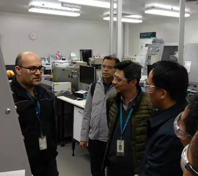

2018年 11 月1 2 日，由国家能源宁夏煤业集团承担的国家重点研发计划课题 6“灾变通风控制技术的全尺寸巷道试验及示范（2018YFC0808106）”，在宁夏回族自治区召开了课题启动会暨工程试验对接会议，标志着该课题的正式启动。
12日上午，在国家能源宁夏煤业集团羊场湾煤矿现场，举行了工程试验对接与考察会议。世界矿山通风大会主席、西安科技大学常心坦教授，澳大利亚莫纳什大学、世界著名矿山通风专家Jerry Tien（田正仁）教授，中国矿业大学（北京）周心权教授，中国矿业大学马小平教授，项目负责人周福宝教授，项目各课题负责人以及研究骨干，国家能源宁夏煤业集团总工程师周光华、科技发展部总经理刘铜强、生产技术部副总经理马灵军，羊场湾煤矿矿长王立峰、党委书记张顺达、总工程师、通风副总以及其他矿领导、技术人员等60余人应邀出席了会议。会议由国家能源宁夏煤业集团总工程师周光华主持。会上，羊场湾煤矿安全矿长王成汇报了工程示范基地——羊场湾煤矿的概况，开拓开采方式，通风系统、防灭火系统、安全监测系统和应急救援系统的现状，以及课题实施配套工程及计划进展情况，与会专家学者进行了相应的质疑和交流。随后，项目各课题单位兵分两路，对羊场湾煤矿进行了井上和井下的立体化考察和研究工作的对接。其中，地面组认真审阅了矿图，参观了地面监测监控系统，生产调度指挥系统，主要通风机风机房和控制室，防爆盖以及地面防灭火系统。井下参观组，项目负责人、各课题长和骨干深入井下，参观了羊场湾二分区的020603综采面，并就课题现场试验内容及实施方案进行了对接探讨。

12日下午，各与会人员赶往了集团公司办公大楼会议室，召开了课题6启动会暨工程试验对接会议。会议由国家能源宁夏煤业集团总工程师周光华主持，项目负责人周福宝教授介绍了项目的总体情况，对各课题提出，要对标企业的实际情况，切实解决工程科学问题，使得项目研究成果真正应用于工程中。宁夏煤矿安全监察党组成员、总工程师弯效杰随后发表了讲话，他指出由国家能源宁夏煤业集团承担的课题六，是整个国家重点研发计划项目成果集中体现的关键之一，对课题六的实施提出了三点建议：一是加强信息沟通；二是强化项目资金管理，三是注重先进性和适用性相结合，为煤矿的安全生产提供技术保障。会上，课题骨干马灵军教授级高工对课题六的研究内容与实施方案进行了详细的汇报，辛海会博士对国拨经费的管理进行了解读。各课题长结合上午的会议和参观考察内容，对工程试验现场对接方案进行了汇报。课题咨询专家，项目负责人审阅了有关资料，对课题的实施方案进行了审查和质询，提出了很多宝贵的建设性意见。最后，专家组一致通过该课题的实施方案，建议尽快展开研究。最后，国家能源宁夏煤业集团总工程师周光华对本次会议进行了总结。他强调指出，课题六要围绕目标和考核指标，对实施方案进行进一步的完善，建立良好的沟通机制，提前做好现场工程准备工作，建立完成适应煤矿和非煤矿山条件和技术要求下的灾变通风智能决策与应急调控关键技术装备示范。
本次课题启动会和工程试验对接会议在宁夏的顺利召开，落实了子课题的研究计划和实施方案，为推动课题研究任务的有序实施，保障研究目标的顺利实现，奠定了良好的基础。